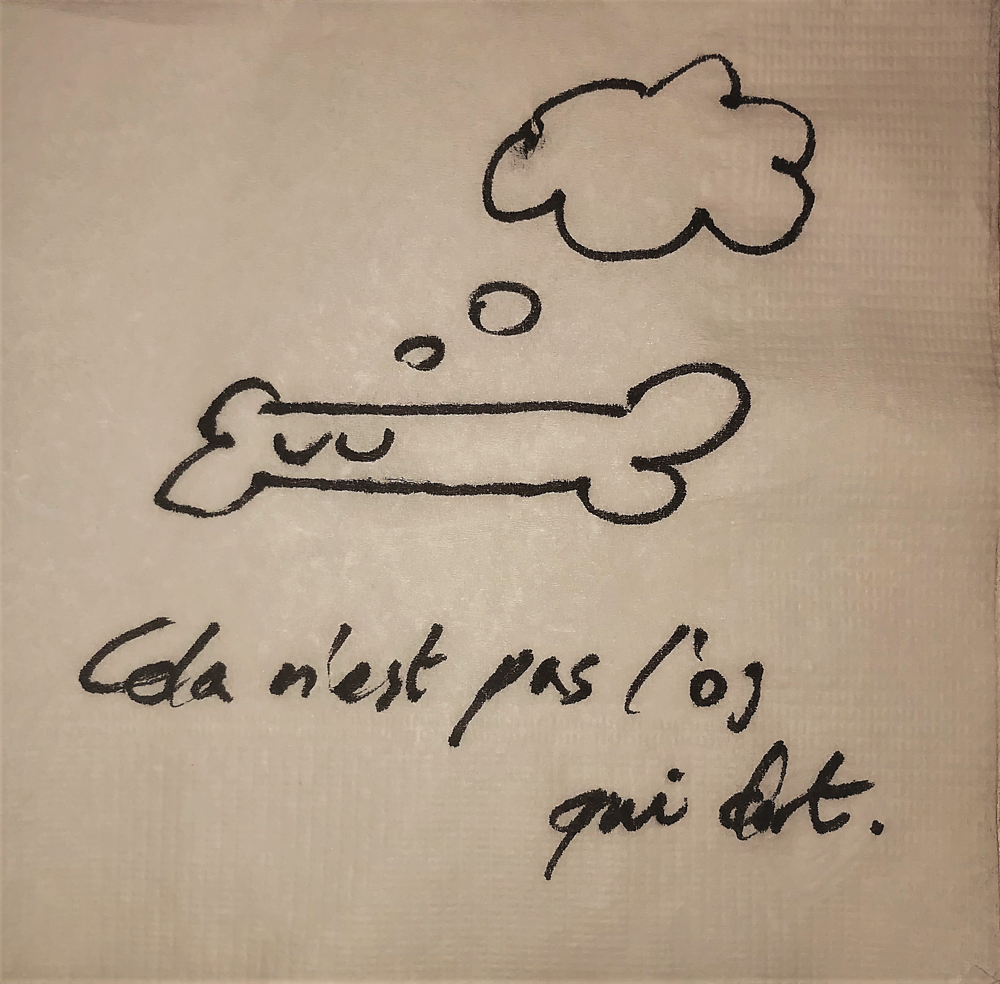

이하준이란?
이하준이 뭘까
서론: 모두 이하준을 기억해줘
이하준과 당신은 이하준이 가능한 한 긴 시간 속에서 인류로부터 완전한 형상으로 기억되기를 바랍니다.
후손들이 이하준을 기억하려면 우리는 이하준이 무엇인지 기록의 형태로 남겨둘 필요가 있습니다. 마치 오픈소스와 같이 말이지요. 그러나 불행하게도, 이하준은 임의의 시각에 대해 완전히 기록될 수 없습니다. 그 이유는 이하준이 플랑크 시간을 단위로, 여러 관점에서 셀 수 없이 많은 사건을 겪기 때문이었습니다. 예를 들어, 이하준의 신체는 하루에 약 3300억개의 세포를 교체합니다. 이하준을 단순히 물리계 내에서라도 정확히 기록하려면 이러한 수많은 사건들이 플랑크 시간 단위의 정교함에서 기록돼야하는데, 이미 수많은 이하준에 대한 사건들이 이하준 자체에 의해서마저 이 순간에도 잊혀지고 있습니다. 결국 우리가 할 수 있는 최선의 방법은 이하준과 증인들이 정확히 기억하는 사건을 기록하고, 앞으로 이하준에게 일어날 일들을 가능한 세세하게 남겨두는 것입니다. (비싼 거짓말 탐지기를 사용하거나, 이하준 스스로와 소중한 것에 대한 맹세를 이끌어내기 또는 정말 별로지만 고문해서 참된 정보를 얻을 수 있음이 알려져 있습니다. 이는 대부분의 역사와 달리 사실만을 기록해야 할 의무를 집니다.)
만약 이렇게 하지 않는다면, 이하준은 베르나르 베르베르의 소설인 '기억'에서 말하는 바와 같이 이하준 이후 4세대 이하에 만인의 기억으로부터 잊혀 버리게 됩니다.
우리는 이하준이 가능한 한 긴 시간 속에서 인류로부터 기억되게 할 것입니다.
ZUN
이하준을 기록하기 위해서 먼저 이하준을 과거 사건을 통해 정의할 필요가 있습니다. 그러나 앞에서와 같이, 이러한 방법으로는 명확하게 이하준을 정의할 수 없습니다. 그럼에도 불구하고, 이하준을 정의하고자 하는 노력이 수반되어 왔고 근사적인 해나 이론적 정의를 찾을 수 있게 되었습니다. 학계에서 개발한 이하준 정의법이 몇 가지 있는데, 그 중 대표적인 방법으로 ZUN(haZounne for Unecessary approximatioN)을 소개합니다.
ZUN은 이하준을 과거 이하준에게 발생한 사건들의 집합으로 표현하는 방법입니다. 우리는 이하준을 '이하준을 포함하는 참인 명제들의 집합'으로 나타낼 수 있습니다. 여기서 '이하준을 포함하는 진리집합'이 무한가산집합일 때 이를 이하준이라 하며, 기호로는 $$H$$ 와 같이 쓰고 있습니다. 이하준원소정리원칙(HWZW)에 따라 이하준의 원소 중 한국어로 작성된 명제는 반드시 명사형으로 끝납니다. (예시: 2020 9모랑 수능 국어만 3등급 차이남)
이하준은 무한가산집합입니다. 더불어 이하준의 개수가 무한하다는 것과(맥락에 따라 서로 다른 $H$가 정의되므로), 임의의 이하준 $H$에 대한 여러 성질들 또한(이 장에서는 생략) 최근 증명되었습니다.
다음은 학계 표준인 이하준 중 하나인 $H_0$의 원소 중 일부입니다.
- 법정명이 이하준
- 2001.10.23. 출생
- 생물학적 남성
이렇게 이하준의 프로필로 이루어진 사실만으로 정의된 이하준 $H_0$을 이하준기준하한이라 부릅니다. 관례상 이하준기준하한에 준하지 않는 이하준은 이하준기준하한의 원소들을 포함하지 않으므로 이하준으로 취급하지 않습니다.
또, 다음과 같이 맥락과 독립적인 이하준을 생각할 수 있습니다.
- 법정명이 이하준
- 서울시립대학교 통계학과에서 학부생인 적 있음
- 2021년 미필
- 사클 노래 좋아요 200개 받고 계정 폭파시켰다가 후회함
- 도지코인 채굴기가 가짜인줄도 모르고 병렬로 채굴 가능함을 발견해 크롬창 150개를 켜서 몇 시간동안 돌림
- 임의의 상수 $t$에 대하여 4일동안 야채카레만 먹은 일이 존재
…
이렇게 특정 맥락에 얽매이지 않고 독립적인 사실만으로 정의된 이하준 $H_R$을 랜덤이하준이라 부릅니다.
Slumbone이란?
이하준의 무한합집합
ZUN의 한계와 극복
이제 우리는 $H$의 원소를 엄청 많이 추가해서 이하준을 근사하면 됩니다. 이렇게 ZUN은 이하준을 다양한 맥락에 따라 정의할 수 있다는 것에 의의가 있지만, 피치 못할 문제점이 하나 있었습니다. 바로 ZUN은 과거 사건으로밖에 이하준을 해석하지 못한다는 것이었습니다. 이하준 앞에는 매번 빛나는 내일이 있습니다. 이하준의 과거를 기록해야하는 만큼, 우리는 이하준의 정의에 기록될 미래를 미리 내포해 시간축에서 적절한 범위를 차지하는 이하준을 표현해야 합니다.
이하준 연구의 정상을 달리던 연구팀은 이러한 문제를 이하준의 실재에게 전달했습니다.
이하준씨! 우리는 당신의 목적을 근사하게 근사했으나, 당신의 남은 삶을 헤아리지는 못했소!
- 연구진 대표 뼈다귀사장
그러자, 이하준은 잠시 생각하더니 냅킨을 꺼내 다음과 같은 그림을 그려 보여줬습니다.
'이것은 자는 뼈가 아니다(cela n'est pas l'os qui dort)'. 이하준은 무슨 말을 하고싶었던 걸까요? 뼈다귀사장은 이 그림을 보고 생각했습니다.
정말 어려운 뼈다귀 그림이군. 나 뼈다귀사장은 이제 어떻게 하면 될까?
점심을 먹고 잠에 든 뼈다귀사장은 꿈을 꿨습니다. 뼈다귀사장은 뼈다귀가 되었는데, 자신이 뼈다귀인지 뼈다귀가 자신인지 헷갈렸습니다. 그는 화물선에 올라 부산에서 멕시코로 16일동안 항해했습니다. 뼈다귀사장은 아무것도 안하고 바다를 항해하는 자신의 꿈이 이루어져 행복했습니다. (작성중...)
어쨌든 모든 $H$의 집합인 $S_H$에서 원소를 택해 줄지어 만든 무한사건열 $H_n$을 생각할 수 있습니다. 여기서, $$\bigcup_{n=1}^{\infty}H_n=\lim_{n\rightarrow \infty }H_n$$ 을 만족하는 증가하는 사건열 $\begin{Bmatrix} H_n \end{Bmatrix}$이 존재하고, 이를 Slumbone이라고 부릅니다.